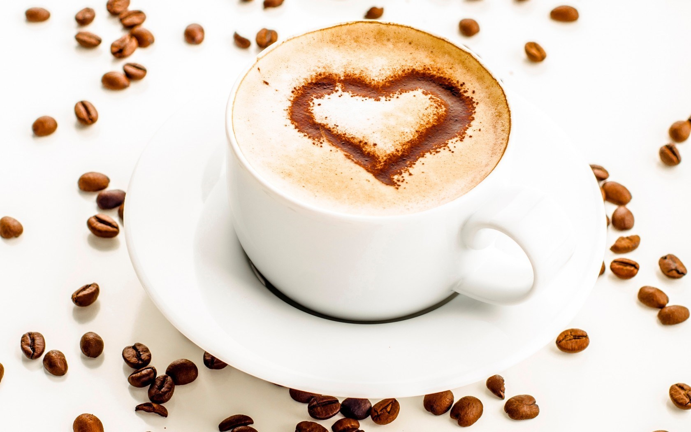
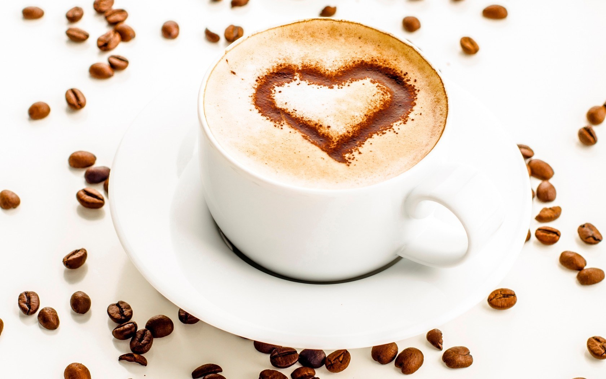
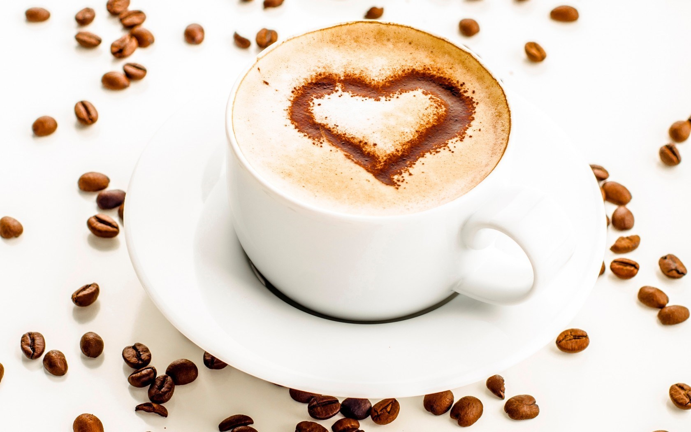

(turku: kahve; arābu: قهوة, qahwa) ir karsts
dzēriens, kas tiek gatavots no grauzdētām kafijkoku
(Coffea) sēklām, kafijas pupiņām.
(turku: kahve; arābu: قهوة, qahwa) ir karsts
dzēriens, kas tiek gatavots no grauzdētām kafijkoku
(Coffea) sēklām, kafijas pupiņām.
Tas parasti ir populārs dzēriens brokastīs vai "kafijas pārtraukumos"
darbā. Tā satur no viena līdz diviem procentiem kofeīna, kas stimulē centrālo nervu sistēmu.
Lielākās valstis pēc ievāktā kafijpupiņu daudzuma 2017. gadā
(tonnas).
- Brazīlija 2,680,515
- Vjetnama 1,542,398
- Kolumbija 754,376
- Indonēzija 668,677
- Pasaulē 9,212,169
100 g produkta satur:
- Ogļhidrāti 0
- Tauki 0,02 g
- Olbaltumvielas 0,12 g
- Ūdens 99,39 g
- Kālijs 49 mg
- Fosfors 3 mg
- Magnijs 3 mg
- Kalcijs 2 mg
- Sāls 2 mg
Populārākie kafijas pagatavošanas veidi.

 


- Brazīlija 2,680,515
- Vjetnama 1,542,398
- Kolumbija 754,376
- Indonēzija 668,677
- Pasaulē 9,212,169
100 g produkta satur:- Ogļhidrāti 0
- Tauki 0,02 g
- Olbaltumvielas 0,12 g
- Ūdens 99,39 g
- Kālijs 49 mg
- Fosfors 3 mg
- Magnijs 3 mg
- Kalcijs 2 mg
- Sāls 2 mg
Populārākie kafijas pagatavošanas veidi.
